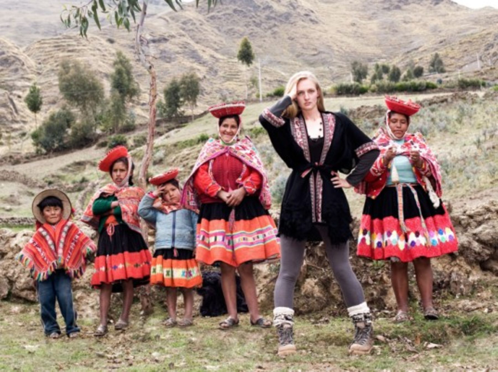

Su amor por la cultura y la gente de los andes peruanos llevó a la estadounidense Kennedy Leavens a hacer del Cusco su hogar, y de fundar una iniciativa para respaldar el arte tradicional.

El fascinante universo de los Andes peruanos ejerce desde hace décadas una poderosa atracción sobre viajeros, investigadores y ciudadanos extranjeros que deciden cambiar radicalmente sus vidas para instalarse en el sur del Perú. Este es el caso de Kennedy Leavens, una ciudadana de Estados Unidos cuyo profundo amor por la cultura, las tradiciones y la gente de los andes la impulsó a establecer su residencia permanente en la región del Cusco.
Lejos de limitarse a disfrutar de los paisajes y la riqueza histórica del territorio imperial, Leavens decidió involucrarse de lleno en la dinámica social y económica de las comunidades locales. Fue así como impulsó una destacada iniciativa orientada a visibilizar, respaldar y promover la labor de un vasto grupo de tejedoras tradicionales que mantienen vivas técnicas ancestrales heredadas de generación en generación.
El proyecto que encabeza Kennedy Leavens no solo representa un puente comercial entre los conocimientos milenarios de los Andes y los mercados contemporáneos, sino que constituye una plataforma de empoderamiento para doscientas artesanas textiles. Estas mujeres, distribuidas en diferentes comunidades del Valle Sagrado y sus alrededores, enfrentan a menudo barreras geográficas y económicas para comercializar sus creaciones de manera justa.
A través de la iniciativa impulsada por Leavens, las tejedoras encuentran un espacio donde su arte es valorado en su justa dimensión. Cada manta, poncho, chalina o pieza elaborada a mano con lana de camélidos sudamericanos y tintes naturales lleva consigo horas de meticuloso trabajo manual que refleja la cosmovisión andina.
La iniciativa promovida por Kennedy Leavens vincula directamente la tradición textil del sur peruano con el esfuerzo colectivo de doscientas artesanas locales.
El trabajo artesanal en el Valle Sagrado de los Incas es mucho más que una actividad económica de subsistencia; es un pilar fundamental de la identidad cultural peruana. Sin embargo, la migración hacia las ciudades y la competencia con productos industriales masivos han puesto en riesgo la continuidad de estas prácticas tradicionales.
Iniciativas como la liderada por Kennedy Leavens contribuyen de manera significativa a frenar la pérdida de estos conocimientos. Al garantizar que las artesanas reciban una retribución adecuada por su talento y dedicación, se incentiva a las nuevas generaciones a mantener viva la tradición del tejido andino, asegurando que las técnicas de urdido, hilado y teñido natural no se pierdan en el tiempo.
De esta manera, la presencia de ciudadanos extranjeros comprometidos con el desarrollo local, combinada con el talento inagotable de las tejedoras del Cusco, demuestra que el intercambio cultural puede traducirse en acciones concretas de bienestar social y preservación patrimonial en el corazón de los Andes.